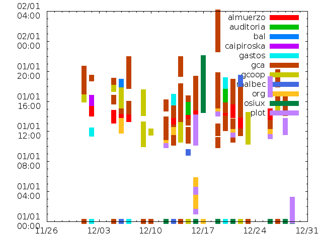
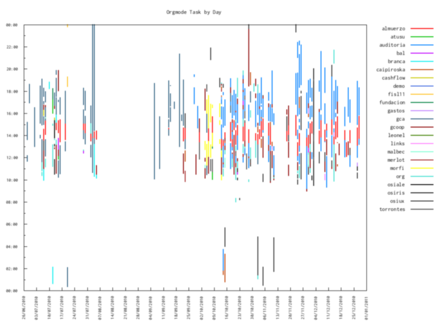
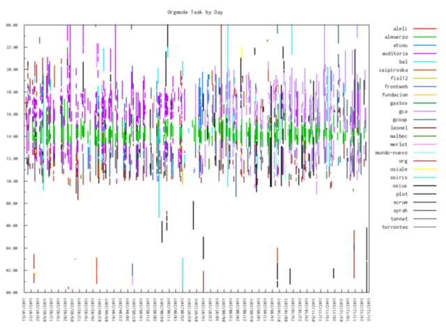

visualizando dos años de orgmode con gnuplot - viewing two years of orgmode with gnuplot
index | OSiUX | blog | docs | charlas
Introducción
Desde que comencé a usar org-mode 1 siempre tuve ganas de graficar el registro de horas que llevo a diario, pasaron dos largos años y hoy lo conseguí, luego de 9 horas y 59 minutos:
** tareas por día.........................................** 9:59 :LOGBOOK: CLOCK: [2011-12-29 jue 00:04]--[2011-12-29 jue 02:45] => 2:41 CLOCK: [2011-12-28 mié 11:50]--[2011-12-28 mié 13:27] => 1:37 CLOCK: [2011-12-26 lun 16:50]--[2011-12-26 lun 19:00] => 2:10 CLOCK: [2011-12-16 vie 10:24]--[2011-12-16 vie 13:55] => 3:31 :END:
Entonces quiero compartir el proceso de esta mini aventura, especialmente para todos aquellos que no conocen nada acerca de org-mode y tienen ganas de saber qué es y par qué sirve.
Es difícil de sintetizar, lo podés usar como anotador, también como agenda, llevar el registro de horas de un proyecto (o varios), hacer planillas de cáculo y hasta ejecutar código de distintos lenguajes de programación entre muchas otras cosas interesantes, casi todo se puede hacer en org-mode.
Lo interesante es que el formato de archivos usados por orgmode son simples archivos de texto plano, con esto está garantizada la compatibiliad y portabilidad de todos tus datos, los podés leer desde cualquier sistema operativo y con cualquier editor de texto, obviamente la edición se agiliza muchísimo usando org-mode.
Un detalle, org-mode es parte de Emacs 2, pero no hay que tener miedo, lleva un poco de tiempo aprenderlo y vale la pena.
Cronometrar Tareas
Para iniciar el reloj de una tarea basta con presionar C-c C-x C-i,
es decir Ctrl+C Ctrl+x Ctrl+i sobre una tarea, y qué es una tarea,
básicamente una línea que comience con asteriscos:
* tareas ** primer tarea ** segunda tarea
Se pueden definir atajos de teclado en el archivo .emacs, en mi
caso alcanza con presionar f9 i para comenzar y luego f9 o
para finalizar:
(global-set-key (kbd "<f9> i") 'org-clock-in) (global-set-key (kbd "<f9> j") 'org-clock-jump-to-current-clock) (global-set-key (kbd "<f9> o") 'org-clock-out)
Cada vez que se utiliza el reloj se crea una línea que indica la fecha y hora de comienzo y fin de la tarea y luego la cuenta de las horas y minutos transcurridos en ese periódo de tiempo:
CLOCK: [2011-12-29 jue 00:04]--[2011-12-29 jue 02:45] => 2:41
Como se trata solamente de texto, es posible editar el texto
manualmente, lo cual permite mucha flexibilidad, sólo hay que respetar
el formato y cada vez que se presione C-c C-c sobre la línea, la
cantidad de horas se recalcula. Además se pueden usar las flechas para
avanzar/retrocer días y horas respetando el calendario.
Eso es todo, solo hay que acordarse de iniciar y detener el reloj cada vez que se está trabajando en una tarea en particular, aunque se puede registar más tarde editando los valores manualmente.
Sugiero agregar un par de líneas al .bashrc que ayudan mucho para
determinar qué estuve haciendo y exáctamente cuándo:
export HISTSIZE=100000 export HISTFILESIZE=100000 export HISTTIMEFORMAT='%Y-%m-%d %H:%M ' HISTCONTROL=$HISTCONTROL${HISTCONTROL+,}ignoredups HISTCONTROL=ignoreboth shopt -s histappend
Esto cambia la vista del comando history y es de gran ayuda:
> history | tail 5237 2011-12-29 03:05 cdb 5240 2011-12-29 03:16 cd 5241 2011-12-29 03:16 g f9 .emacs 5242 2011-12-29 03:21 :q 5243 2011-12-29 03:29 cd 5245 2011-12-29 03:29 gi hist .bashrc 5246 2011-12-29 03:29 history | tail
Recolectando datos
La idea es recoletar todos los períodos de tiempo utilizados para cada
proyecto (un archivo con extesion .org) ordenados por día y
horario en un determinado año y mes.
Para esta tarea realizo un script bash el cual lo escribo, edito y ejecuto directamente desde org-mode usando org-babel 3 .
listado de días
Primero busco las líneas que tengan CLOCK: seguido de cualquier cosa
(.*) para luego buscar el año y mes actual 2011-12 seguido de un
número de dos cifras [0-9]{2} en todos los archivos *.org, usando
el comando egrep:
egrep -ho "CLOCK:(.*)2011-12-[0-9]{2}" *.org
y obtengo muchas líneas como éstas:
... CLOCK: [2011-12-26 lun 11:19]--[2011-12-26 CLOCK: [2011-12-21 mié 11:31]--[2011-12-21 CLOCK: [2011-12-19 lun 14:18]--[2011-12-19 CLOCK: [2011-12-12 lun 10:04]--[2011-12-12 CLOCK: [2011-12-16 vie 01:22]--[2011-12-16 CLOCK: [2011-12-16 vie 01:17]--[2011-12-16 ...
a continuación me quedo sólo con AÑO-MES-DIA:
egrep -ho "CLOCK:(.*)2011-12-[0-9]{2}" *.org | \ awk '{print $2}' | tr -d "[" | sort -u
elimino los caracteres `[` y ordeno la lista dejando valores únicos:
2011-12-12 2011-12-16 2011-12-19 2011-12-21 2011-12-26
todo esto para obtener la lista de días en los cuales hay tareas cronometradas, ya que no siempre estoy registrando horas.
listado de archivos
De manera similar al paso anterior hago lo mismo para obtener el listado de archivos de los proyectos registrados:
egrep -l "CLOCK:(.*)2011-12-[0-9]{2}" *.org | sort -u
el resultado son nombres de archivos:
almuerzo.org auditoria.org bal.org caipiroska.org gcoop.org malbec.org org.org osiux.org plot.org
Armando la matriz
Con el listado de días y archivos estamos en condiciones de completar una matriz para cada día y proyecto especificando la hora de inicio de cada tarea y la cantidad de minutos consumidos, siendo usadas las filas para los días y un par de columnas (inicio y minutos) para cada proyecto:
dia almuerzo min gca min 2011-12-15 13:19 50 0 0 2011-12-15 14:10 18 0 0 2011-12-17 0 0 0 0 2011-12-18 13:15 61 0 0 2011-12-18 0 0 12:28 107 2011-12-18 0 0 14:16 106 2011-12-18 0 0 16:37 25 2011-12-18 0 0 0 0 2011-12-18 0 0 0 0 2011-12-19 0 0 14:33 25 2011-12-19 0 0 16:59 25
A fin de completar armar estos datos en un archivo, es necesario buscar para una fecha determinada en un archivo en particular:
grep "CLOCK: \[2011-12-18" gca.org
obtengo lo siguiente:
CLOCK: 2011-01-18 mar 14:16 -- 2011-01-18 mar 16:02 => 1:46 CLOCK: 2011-01-18 mar 12:28 -- 2011-01-18 mar 14:15 => 1:47 CLOCK: 2011-01-18 mar 16:37 -- 2011-01-18 mar 17:02 => 0:25
elimino los caracteres [] y me quedo con el día $2, la hora de
inicio $4 y la cantidad de horas y minutos $10:
grep "CLOCK: \[2011-12-18" gca.org | tr "[]" " " | awk '{print $2,$4,$10}'
el resultado luego de usar awk:
2011-01-18 14:16 1:46 2011-01-18 12:28 1:47 2011-01-18 16:37 0:25
hay un detalle, la última columa está en formato H:MM y es
necesario convertirla a minutos, esto también lo resuelvo mendiante
awk multiplicando por 60 las horas y sumando los minutos, solo es
necesario dividir split la última columna por el caracter : y
ordenando el resultado:
grep "CLOCK: \[2011-12-18" gca.org | tr "[]" " " | \ awk '{split($10,a,":"); print $2,$4,a[1]*60+a[2]}' | sort
obteniendo:
2011-12-18 12:28 107 2011-12-18 14:16 106 2011-12-18 16:37 25
Listo! Tenemos todos los datos que necesitamos, asi que los guardo en
un archivo org-task-by-day.dat para graficar.
El código completo del script (con algunas mejoras) es el siguiente:
#+srcname: org-task-by-day #+begin_src sh :session :results file cd ~/org YEAR=$(date +%Y) MONTH=$(date +%m) DAYS=$(egrep -ho "CLOCK:(.*)$YEAR-$MONTH-[0-9]{2}" *.org | \ awk '{print $2}' | tr -d "[" | sort -u) FILES=$(egrep -l "CLOCK:(.*)$YEAR-$MONTH-[0-9]{2}" *.org | sort -u) DAT=org-task-by-day.dat echo -n 'dia\t' >$DAT for F in $FILES do echo -n $(basename $F .org)'\tmin\t' >>$DAT done echo -n '\n' >>$DAT for DAY in $DAYS do SEP='\t' for F in $FILES do grep "CLOCK: \[$DAY" $F | tr "[]" " " | \ awk '{split($10,a,":"); print $2,$4,a[1]*60+a[2]}' | sort | while read T do START=$(echo $T | awk '{print $2}') MINUTES=$(echo $T | awk '{print $3}') echo $DAY$SEP$START'\t'$MINUTES >>$DAT done SEP=$SEP'0\t0\t' done done echo $DAT
#+END_SRC
Ahora, cada vez que se presiona C-c C-c, este código se ejecuta y
genera una línea con un link al archivo que contiene todos los datos
procesados:
#+results: org-task-by-day [[file:org-task-by-day.dat]]
Es posible copiar y pegar estas líneas en cualquier archivo de
org-mode para que sea funcional (siempre que esté habilitado
org-babel), en el archivo .emacs es necesario definir:
(require 'ob-sh) (setq org-confirm-babel-evaluate nil) (setq org-babel-load-languages ( quote ( (gnuplot . t) (sh . t) )))
Graficando
El primer gráfico
GNUPLOT 4 es sorprendente, realmente es muy fácil de usar y muy rápido generando los gráficos, inicialmente alcanza con indicar algunos parámetros y ya se puede visualizar el gráfico.
Definiendo un bloque de código contenido entre los textos
#+begin_src y #+end_src se puede escribir toda la sintaxis de
gnuplot y cada vez que se presione C-c C-c obtenemos un archivo
png con nombre definido en el parámetro :file, y en la
variable :var data= indicamos el nombre de archivo donde están
contenidos los datos a plotear:
#+begin_src gnuplot :var data='org-task-by-day.dat' :file org-task-by-day.png reset set xdata time set ydata time set timefmt x "%Y-%m-%d" set timefmt y "%H:%M" plot data using 1:2:(0):($3*60) with vec lw 10 lt 1 nohead ti col(2), \ data using 1:4:(0):($5*60) with vec lw 10 lt 2 nohead ti col(4), \ data using 1:6:(0):($7*60) with vec lw 10 lt 3 nohead ti col(6), \ data using 1:8:(0):($9*60) with vec lw 10 lt 4 nohead ti col(8), \ data using 1:10:(0):($11*60) with vec lw 10 lt 5 nohead ti col(10), \ data using 1:12:(0):($13*60) with vec lw 10 lt 6 nohead ti col(12), \ data using 1:14:(0):($15*60) with vec lw 10 lt 7 nohead ti col(14), \ data using 1:16:(0):($17*60) with vec lw 10 lt 8 nohead ti col(16), \ data using 1:18:(0):($19*60) with vec lw 10 lt 9 nohead ti col(18), \ data using 1:20:(0):($21*60) with vec lw 10 lt 10 nohead ti col(20), \ data using 1:22:(0):($23*60) with vec lw 10 lt 11 nohead ti col(22), \ #+end_src
Inicialmente especificando que los ejes x e y son del tipo
fecha y luego dando formato a cada eje, ya estamos en condiciones de
leer y graficar, los parámetros indicados para cada serie de datos
son:
data using 1:6:(0):($7*60) with vec lw 10 lt 3 nohead ti col(6), \
^ ^ ^ ^ ^-+-^ ^-+-^ ^ ^---+---^
| | | | | | | |
| | | | | | | titulo columna
| | | | | | +- sin flecha
| | | | | +- tipo de línea
| | | | +- espesor de línea
| | | +- tipo de gráfico (vectores)
| | +- valor eje y
| +- columna eje y
+--- columna eje x
El primer gráfico:

Mejorando el gráfico
Las primeras mejoras que apliqué fueron todas visuales:
Tamaño de la imagen:
set terminal png size 1024, 768
Margenes:
set lmargin 5 set bmargin 5 set rmargin 16
Títulos:
set title "Orgmode Task by Day" font "Inconsolata,10"
Formato fechas y horas:
set format y "%H:%M" set format x "%d/%m/%Y" font "Inconsolata,8"
Rango horario eje y:
set yrange ["00:01":"23:59"]
Etiquetas de las series de datos::
set key outside font "Inconsolata,10"
Etiquetas de los ejes:
set xtics 60*60*24*7 font "Inconsolata,8" nomirror rotate by right at 0.5,0 set ytics font "Inconsolata,8" nomirror set mytics unset mxtics set autoscale x
Aunque la principal mejora fue reemplazar las líneas para cada serie
de datos por una función que calcula el todal de series contando el
total de archivos *.org e iterando por todas las series en una
sóla línea de código::
f=`ls ~/org/*.org | wc -l` plot for [i=2:f:2] data u 1:i:(0):(column(i+1)*60) with vec lw 2 nohead ti col(i)
Con todos estos cambios aplicados el gráfico mejora notablemente:

El código completo de gnuplot es el siguiente:
#+begin_src gnuplot :var data='org-task-by-day.dat' :file org-task-by-day.png reset set terminal png size 1024, 768 set lmargin 5 set bmargin 5 set rmargin 16 set title "Orgmode Task by Day" font "Inconsolata,10" set xdata time set ydata time set timefmt x "%Y-%m-%d" set timefmt y "%H:%M" set format y "%H:%M" set format x "%d/%m/%Y" font "Inconsolata,8" set yrange ["00:01":"23:59"] set key outside font "Inconsolata,10" set xtics 60*60*24*7 font "Inconsolata,8" nomirror rotate by right at 0.5,0 set ytics font "Inconsolata,8" nomirror set mytics unset mxtics set autoscale x f=`ls ~/org/*.org | wc -l` plot for [i=2:f:2] data u 1:i:(0):(column(i+1)*60) with vec lw 2 nohead ti col(i) #+end_src #+results: [[file:org-task-by-day.png]]
Está disponible un archivo plot.org con el código completo:
Graficando un año completo
Como mencioné anteriormente, org-babel es muy flexible permitiendo
modificar el código y presionando C-c C-c se obtienen resultados
en segundos, asi que bastó con reemplazar las líneas:
YEAR=$(date +%Y) ... DAYS=$(egrep -ho "CLOCK:(.*)$YEAR-$MONTH-[0-9]{2}" *.org | \
por:
YEAR=2011
DAYS=$(egrep -ho "CLOCK:(.*)$YEAR-[0-9]{2}-[0-9]{2}" *.org | \
Y obtuve un gráfico de todo el 2010:

Comparando el 2011, veo que soy un adicto a org-mode:

Conclusión
Org-mode es fiel a la filosofía UNIX al permitir unir muchas pequeñas
herramientas, en este caso: bash, awk, egrep, sort, gnuplot con la
ventaja de que no solo no es necesario salir del editor de texto sino
que además se integran perfectamente unas con otras al mantener la
simplicidad de manejar todo en archivos de textos permitiendo que el
límite para obtener algo deseado sea sólo la imaginación de quién lo
usa.
Si llegaste hasta acá te recomiendo leer:
http://osiux.com/emacs-orgmode-organize-your-life-in-plain-text.txt
Por cierto, este artículo lo escribí usando sintaxis
restructuredtext 5 alternando entre rst-mode y
org-mode dentro de emacs en el mismo archivo donde generé todos
los scripts para graficar org-mode.
Ejecutando unas pocas líneas se puede ver, cuanto tardé:
#+begin_src sh :session :results output cd ~/org grep -A 3 "*** visualizando" plot.org | grep "=" #+end_src #+results: : CLOCK: [2011-12-29 jue 02:55]--[2011-12-29 jue 05:47] => 2:52
ChangeLog
- Cambio formato rst por org.
- Agrego width a imágenes.